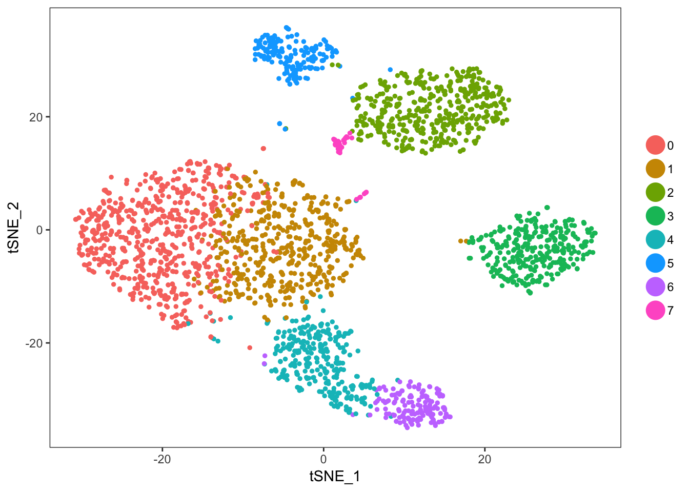
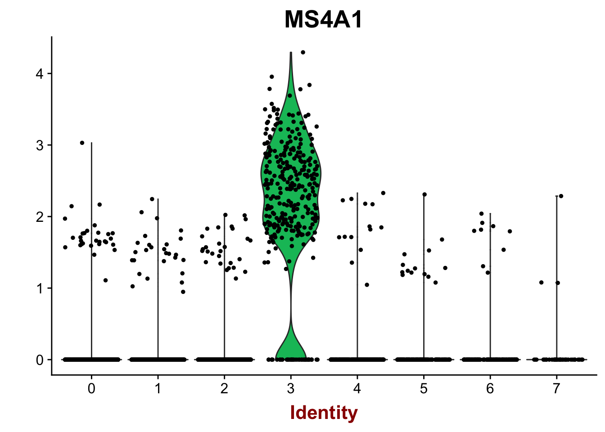

Pbmc_template
LB
2/6/2019
Last updated: 2019-02-06
workflowr checks: (Click a bullet for more information)-
✔ R Markdown file: up-to-date
Great! Since the R Markdown file has been committed to the Git repository, you know the exact version of the code that produced these results.
-
✔ Environment: empty
Great job! The global environment was empty. Objects defined in the global environment can affect the analysis in your R Markdown file in unknown ways. For reproduciblity it’s best to always run the code in an empty environment.
-
✔ Seed:
set.seed(20190206)The command
set.seed(20190206)was run prior to running the code in the R Markdown file. Setting a seed ensures that any results that rely on randomness, e.g. subsampling or permutations, are reproducible. -
✔ Session information: recorded
Great job! Recording the operating system, R version, and package versions is critical for reproducibility.
-
Great! You are using Git for version control. Tracking code development and connecting the code version to the results is critical for reproducibility. The version displayed above was the version of the Git repository at the time these results were generated.✔ Repository version: 2683d09
Note that you need to be careful to ensure that all relevant files for the analysis have been committed to Git prior to generating the results (you can usewflow_publishorwflow_git_commit). workflowr only checks the R Markdown file, but you know if there are other scripts or data files that it depends on. Below is the status of the Git repository when the results were generated:
Note that any generated files, e.g. HTML, png, CSS, etc., are not included in this status report because it is ok for generated content to have uncommitted changes.Untracked files: Untracked: script.Rmd
Expand here to see past versions:
| File | Version | Author | Date | Message |
|---|---|---|---|---|
| Rmd | 2683d09 | lo2811 | 2019-02-06 | Add the first analysis |
Package instalation and setup
install.packages("Seurat", repos = "http://cran.us.r-project.org")
The downloaded binary packages are in
/var/folders/02/9007bm513wgcq5lvlgxl_mtm09400x/T//Rtmp5ym0cb/downloaded_packageslibrary(Seurat)Loading required package: ggplot2Loading required package: cowplot
Attaching package: 'cowplot'The following object is masked from 'package:ggplot2':
ggsaveLoading required package: MatrixRead in data and create the Seurat object
d_1 <- Read10X("/Volumes/scratch/agutierrez/10x_fastq/move/BCTCSF_0001_3_CS_MNC_C2_X5SCR_F00452_HWJNCBBXX/outs/filtered_gene_bc_matrices/GRCh38")
colnames(d_1) = paste0("F00452", sep = "_", colnames(d_1))
pbmc <- CreateSeuratObject(d_1, project = "F00452", min.genes = 200)
rm(d_1)Data processing
Filter cells by nUMI and log normalize data
pbmc <- FilterCells(pbmc, "nUMI", 1000, Inf)
pbmc <- NormalizeData(pbmc)Find variable genes and scale data
pbmc <- FindVariableGenes(pbmc)pbmc <- ScaleData(pbmc)Scaling data matrixRun PCA
pbmc <- RunPCA(object = pbmc, pc.genes = pbmc@var.genes, do.print = TRUE, pcs.print = 1:5, genes.print = 5)[1] "PC1"
[1] "RPS12" "MT-ATP8" "CD7" "IL7R" "LTB"
[1] ""
[1] "CST3" "LYZ" "FCN1" "S100A9" "GPX1"
[1] ""
[1] ""
[1] "PC2"
[1] "NKG7" "GNLY" "CST7" "KLRD1" "GZMB"
[1] ""
[1] "MS4A1" "CD79A" "HLA-DQA1" "LINC00926" "HLA-DRA"
[1] ""
[1] ""
[1] "PC3"
[1] "GP9" "CMTM5" "TUBB1" "C19orf33" "SDPR"
[1] ""
[1] "VIM" "S100A6" "S100A11" "LST1" "RPS12"
[1] ""
[1] ""
[1] "PC4"
[1] "IL7R" "RP11-291B21.2" "AQP3" "INPP4B"
[5] "RPS12"
[1] ""
[1] "CD74" "HLA-DRA" "MS4A1" "HLA-DRB5" "HLA-DPA1"
[1] ""
[1] ""
[1] "PC5"
[1] "S100A12" "VCAN" "S100A8" "CD14" "CES1"
[1] ""
[1] "CDKN1C" "C1QA" "FCGR3A" "C1QB" "LILRB1"
[1] ""
[1] ""Find clusters
pbmc <- FindClusters(object = pbmc, reduction.type = "pca", dims.use = 1:10, resolution = 0.6, print.output = 0, save.SNN = TRUE)Run tSNE plot
pbmc <- RunTSNE(object = pbmc, dims.use = 1:10, do.fast = TRUE)
TSNEPlot(pbmc) ##Plot gene expression (MS4A1 is a B cell gene)
FeaturePlot(pbmc, "MS4A1")VlnPlot(pbmc,"MS4A1") ##Annotation for the tSNE plot
canonical_markers <- c("IL7R", "CD14", "LYZ", "MS4A1", "CD8A", "FCGR3A", "MS4A7", "GNLY", "NKG7", "FCER1A", "CST3", "PPBP")
DotPlot(pbmc, genes.plot = canonical_markers, x.lab.rot = TRUE, plot.legend = TRUE)
current.cluster.ids <- c(0, 1, 2, 3, 4, 5, 6, 7)
new.cluster.ids <- c("CD4 T cells", "CD14+ Monocytes", "B cells", "CD8 T cells",
"FCGR3A+ Monocytes", "NK cells", "Dendritic cells", "Megakaryocytes")
pbmc@ident <- plyr::mapvalues(x = pbmc@ident, from = current.cluster.ids, to = new.cluster.ids)The following `from` values were not present in `x`: 7TSNEPlot(object = pbmc, do.label = TRUE, pt.size = 0.5)
Session information
sessionInfo()R version 3.5.2 (2018-12-20)
Platform: x86_64-apple-darwin15.6.0 (64-bit)
Running under: macOS High Sierra 10.13.6
Matrix products: default
BLAS: /Library/Frameworks/R.framework/Versions/3.5/Resources/lib/libRblas.0.dylib
LAPACK: /Library/Frameworks/R.framework/Versions/3.5/Resources/lib/libRlapack.dylib
locale:
[1] en_US.UTF-8/en_US.UTF-8/en_US.UTF-8/C/en_US.UTF-8/en_US.UTF-8
attached base packages:
[1] stats graphics grDevices utils datasets methods base
other attached packages:
[1] bindrcpp_0.2.2 Seurat_2.3.4 Matrix_1.2-15 cowplot_0.9.4
[5] ggplot2_3.1.0
loaded via a namespace (and not attached):
[1] Rtsne_0.15 colorspace_1.4-0 class_7.3-14
[4] modeltools_0.2-22 ggridges_0.5.1 mclust_5.4.2
[7] rprojroot_1.3-2 htmlTable_1.13.1 base64enc_0.1-3
[10] rstudioapi_0.9.0 proxy_0.4-22 npsurv_0.4-0
[13] flexmix_2.3-14 bit64_0.9-7 mvtnorm_1.0-8
[16] codetools_0.2-15 splines_3.5.2 R.methodsS3_1.7.1
[19] lsei_1.2-0 robustbase_0.93-3 knitr_1.21
[22] jsonlite_1.6 Formula_1.2-3 workflowr_1.1.1
[25] ica_1.0-2 cluster_2.0.7-1 kernlab_0.9-27
[28] png_0.1-7 R.oo_1.22.0 compiler_3.5.2
[31] httr_1.4.0 backports_1.1.3 assertthat_0.2.0
[34] lazyeval_0.2.1 lars_1.2 acepack_1.4.1
[37] htmltools_0.3.6 tools_3.5.2 igraph_1.2.2
[40] gtable_0.2.0 glue_1.3.0 reshape2_1.4.3
[43] RANN_2.6.1 dplyr_0.7.8 Rcpp_1.0.0
[46] trimcluster_0.1-2.1 gdata_2.18.0 ape_5.2
[49] nlme_3.1-137 iterators_1.0.10 fpc_2.1-11.1
[52] gbRd_0.4-11 lmtest_0.9-36 xfun_0.4
[55] stringr_1.3.1 irlba_2.3.2 gtools_3.8.1
[58] DEoptimR_1.0-8 MASS_7.3-51.1 zoo_1.8-4
[61] scales_1.0.0 doSNOW_1.0.16 parallel_3.5.2
[64] RColorBrewer_1.1-2 yaml_2.2.0 reticulate_1.10
[67] pbapply_1.3-4 gridExtra_2.3 rpart_4.1-13
[70] segmented_0.5-3.0 latticeExtra_0.6-28 stringi_1.2.4
[73] foreach_1.4.4 checkmate_1.9.1 caTools_1.17.1.1
[76] bibtex_0.4.2 Rdpack_0.10-1 SDMTools_1.1-221
[79] rlang_0.3.1 pkgconfig_2.0.2 dtw_1.20-1
[82] prabclus_2.2-6 bitops_1.0-6 evaluate_0.12
[85] lattice_0.20-38 ROCR_1.0-7 purrr_0.2.5
[88] bindr_0.1.1 labeling_0.3 htmlwidgets_1.3
[91] bit_1.1-14 tidyselect_0.2.5 plyr_1.8.4
[94] magrittr_1.5 R6_2.3.0 snow_0.4-3
[97] gplots_3.0.1 Hmisc_4.1-1 pillar_1.3.1
[100] whisker_0.3-2 foreign_0.8-71 withr_2.1.2
[103] fitdistrplus_1.0-11 mixtools_1.1.0 survival_2.43-3
[106] nnet_7.3-12 tsne_0.1-3 tibble_2.0.1
[109] crayon_1.3.4 hdf5r_1.0.1 KernSmooth_2.23-15
[112] rmarkdown_1.11 grid_3.5.2 data.table_1.12.0
[115] git2r_0.24.0 metap_1.0 digest_0.6.18
[118] diptest_0.75-7 tidyr_0.8.2 R.utils_2.7.0
[121] stats4_3.5.2 munsell_0.5.0 This reproducible R Markdown analysis was created with workflowr 1.1.1